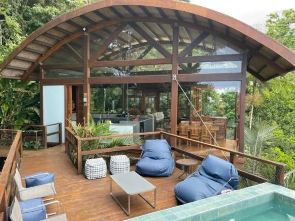
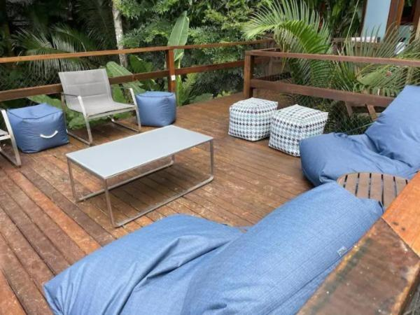
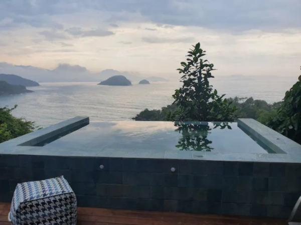
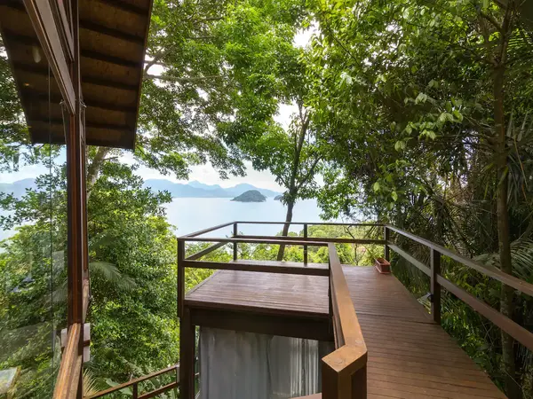
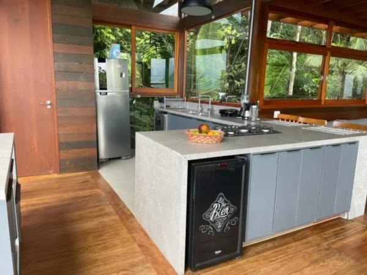
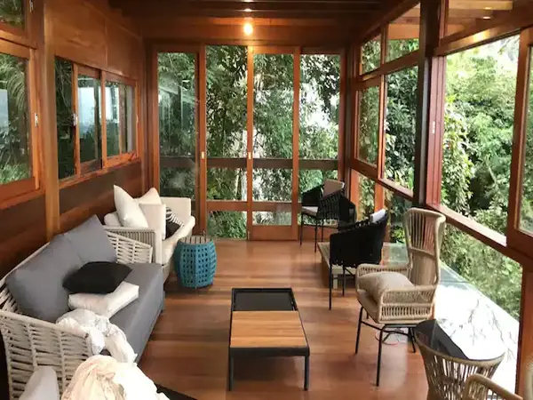
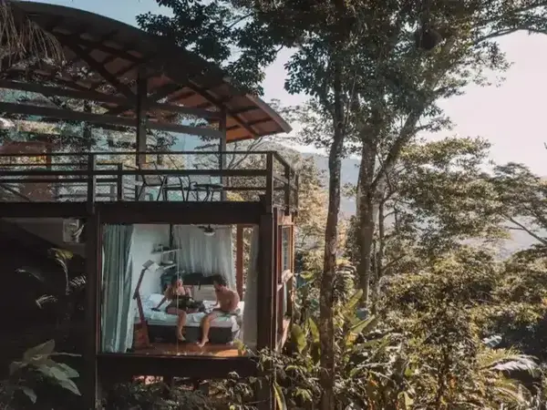
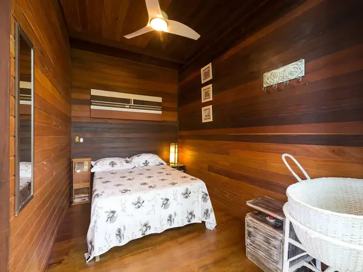

Casa com vista - Praia do Félix
Ubatuba, São Paulo, Brasil








O espaço
Casa de madeira e vidro, reformada em 2021, com piscina e ampla vista para o mar. A casa possui 4 suítes e acomoda confortavelmente 8 pessoas. A distância para a praia é de aproximadamente 350 metros. A arquiteta contemporânea, a vista ampla para o mar, o contato com a natureza, o silêncio e a tranqüilidade da mata, com conforto e segurança fazem desta casa um espaço único.
Tipo De Acomodação :
Quarto 1 :
1 cama de casal
Quarto 2 :
1 cama de casal
Quarto 3 :
1 cama de casal
Quarto 4 :
1 cama de queen, 2 camas infantis
COMODIDADES :
Piscina privativa e interna
HDTV de 42" com Netflix, Amazon Prime Video, TV a cabo
Espaço inteiro: casa (hospedado por Gilberto)
8 hóspedes - 4 quartos - 4 camas - 4 banheiros e meio
Regras :
É permitido deixar as malas
(Para a conveniência do hóspede quando chegar cedo ou for embora tarde)
Estadias de longa duração são permitidas
(Permite estadia por 28 dias ou mais)
Proibido animais de estimação
DIÁRIA:
R$1.857 por noite
AVALIAÇÕES :
Artemis
Dezembro de 2022
A casa do Gilberto tem uma visão privilegiada da Praia do Felix. A beleza da casa complementa a mata atlântica de uma forma orgânica.
André
Dezembro de 2022
Maravilhosa a vista . A casa muito confortável também . Tudo perfeito.